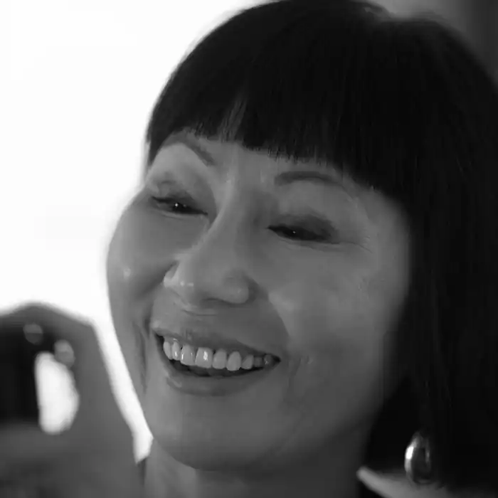

Емі Тан, Амі Тан (англ. Amy Tan; кит. 譚恩美; 19 лютого 1952, Окленд) — американська письменниця китайського походження. У своїй творчості досліджує зв'язок між матір'ю і донькою і їхні стосунки, також зустріч і взаємодію американської та китайської цивілізацій.
мі Тан народилася в сім'ї китайських імігрантів. Її батько, Джон Тан, працював електриком і виконував функції священнослужителя в баптистській церкві, її мати Дейзі свого часу була змушена покинути своїх дітей від попереднього шлюбу в Шанхаї. Ця пригода стала основою для сюжету виданого 1989 р. дебютного твору "Клуб веселощів і удачі" (The Joy Luck Club), який того ж року газета Нью-Йорк Таймс назвала бестселером.
В сім'ї Джона і Дейзі було троє дітей. Наприкінці 1960-х у віці 16 років від пухлини мозку помер старший брат Емі. Того ж року від цієї ж хвороби помер її батько. Після цієї сімейної трагедії Дейзі переїздить разом з Емі і її молодшим братом до Швейцарії, де Емі завершує середню освіту. Там вона дізнається про перший шлюб її матері в Китаї і про дітей від цього шлюбу. 1987 року Емі відвідала Китай разом з Дейзі, де нарешті зустрілася зі своїми сестрами. Емі Тан вивчала англійську і мовознавство в університеті Сан-Хосе (диплом магістра гуманітарних наук, 1974 р.) і в університеті Берклі, штат Каліфорнія. Емі Тан мешкає в Саусаліто (Каліфорнія) зі своїм чоловіком — Луїсом де Маттеї італ. Louis DeMattei, за якого вийшла заміж у 1974-му. 1987 року Тан разом зі своєю матір'ю-емігранткою побувала в Китаї. Там вона вперше зустрілася зі своїми єдинокровними сестрами. Враження від подорожі та зустрічі частково використані в її першій повісті "Клуб веселощів і удачі" (The Joy Luck Club), яку перекладено більш ніж 30 мовами і екранізовано у 1993 р. американцем азійського походження, Вейном Вонґом. 1989 р. цю книжку нагородили Національною книжковою премією і книжковою премією газети "Лос-Анджелес таймс". На створення другого твору, "Дружина Бога Кухні" (The Kitchen God's Wife) (1991), її надихнула історія життя матері. В ньому йдеться про китаянку, яка не може пристосуватися до американського способу життя, та її стосунки зі своєю цілком замериканізованою донькою. Серед іншого, Тан видала роман "Сто таємних почуттів" (The Hundred Secret Senses) (1995) — про американку, яка поступово вчиться цінувати свою єдинокровну сестру-китаянку і її знання, і два твори для дітей, "Пані з Місяця" (The Moon Lady) (1992) і "Китайська сіамська кішка" (The Chinese Siamese Cat) (1994). Романи і повісті Клуб веселощів і удачі (The Joy Luck Club) (1989) Дружина Бога Кухні (The Kitchen God's Wife) (1991) Сто таємних почуттів (The Hundred Secret Senses) (1995) (Two Kinds) (2000) Донька костоправа (The Bonesetter's Daughter) (2001). Перше видання мало назву "Донька косторіза" (The Bonecutter's Daughter). В книжці не йдеться про костоправів. Не дати рибі потонути (Saving Fish from Drowning) (2005) Книжки для дітей Пані з Місяця (The Moon Lady), (1992) Китайська сіамська кішка (Sagwa, the Chinese Siamese Cat), (1994) Інші твори The Opposite of Fate: A Book of Musings (2003) Mid-Life Confidential: The Rock Bottom Remainders Tour America With Three Cords and an Attitude (with Dave Barry, Stephen King, Tabitha King, Barbara Kingsolver) (1994) Mother (with Maya Angelou, Mary Higgins Clark) (1996) The Best American Short Stories 1999 (Editor, with Katrina Kenison) (1999) Переклади Клуб веселощів і удачі (The Joy Luck Club). Перша публікація українською: журнал "Всесвіт", № 9/10. 2005. Переклав Сергій Снігур